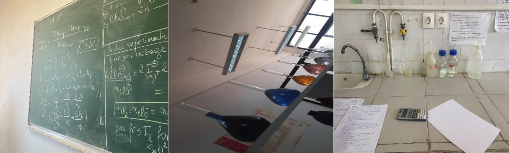
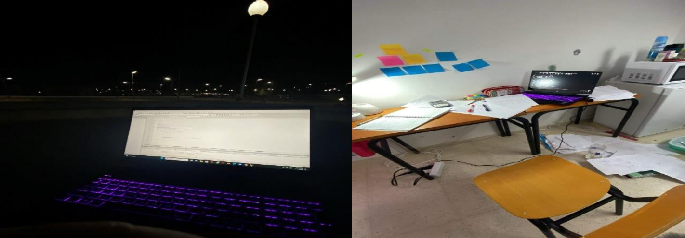
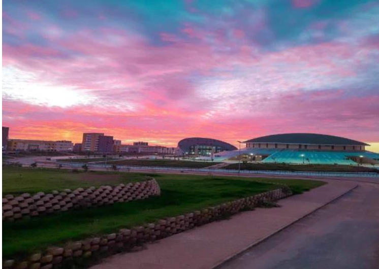
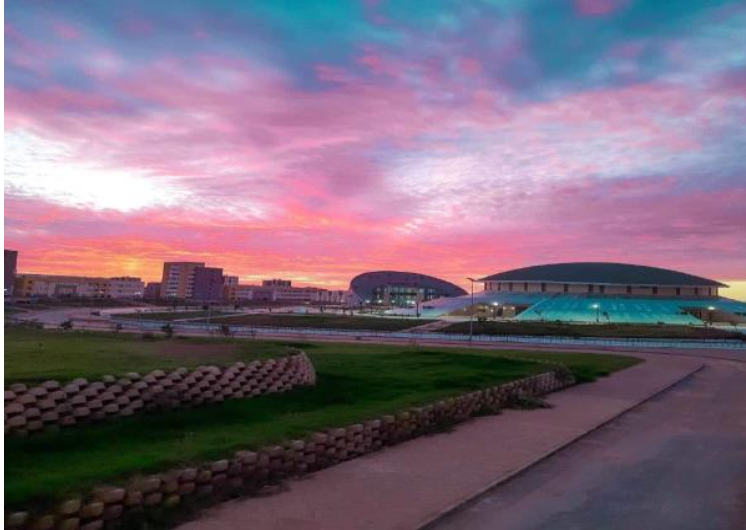

Nanotechnology: The Field That Changed MY Life
25 jul 2024
Written by Melissa hacheche
Second year NSNN student
My journey into nanotechnology began right after I received my baccalaureate degree. My
math teacher, knowing my passion for math, physics, chemistry, and the world of atoms,
suggested I explore this fascinating field. At first, I wasn't very familiar with nanotechnology,
but as soon as I started learning about it, I knew I belonged there. I felt both afraid and
excited.
When I first arrived at the campus, I was happy to see the dormitory. Compared to other
dorms I had seen, which seemed catastrophic, ours was good, and I quickly got used to it. The
school itself was impressive, despite some initial issues since it had opened prematurely.
Initially, we had to go to USTHB for practical work, but now all the laboratories are ready.
While I wish we had them during the first year, the experience was unforgettable.

Academically, the journey was tough, especially at the beginning. I often panicked and felt
lost, but I realized that it was my fault. Organizing everything could have prevented a lot of
stress. This year was a challenge for me because I was used to studying at the last minute and
still getting good marks. However, this approach proved stressful and inefficient in such a
demanding field. By the end of the year, I had learned a lot, becoming a better person and a
better student. I started to enjoy my life and studies more, becoming more creative, sharing
new ideas, achieving good marks, having great friendships, and being responsible.

My advice to anyone is to never give up. You may face problems, stress, and panic, but
perseverance and organization is the key. Study regularly and avoid comparing yourself to
others. Maintain a balanced life with your own activities like going to the gym and social
outings.
Most importantly, work smart, not just hard. This principle applies not only to university but
to all aspects of life. Nanotechnology, in particular, is a field with limitless potential. You can
explore materials at a fundamental level to change the world. Study it with passion and
excitement, not just for grades. Be creative and innovative.
Nanotechnology has transformed the way I think and approach life. It has taught me the value
of perseverance, organization, and smart work. The journey has been challenging but
incredibly rewarding. Don’t be afraid and fight for it!.
 
